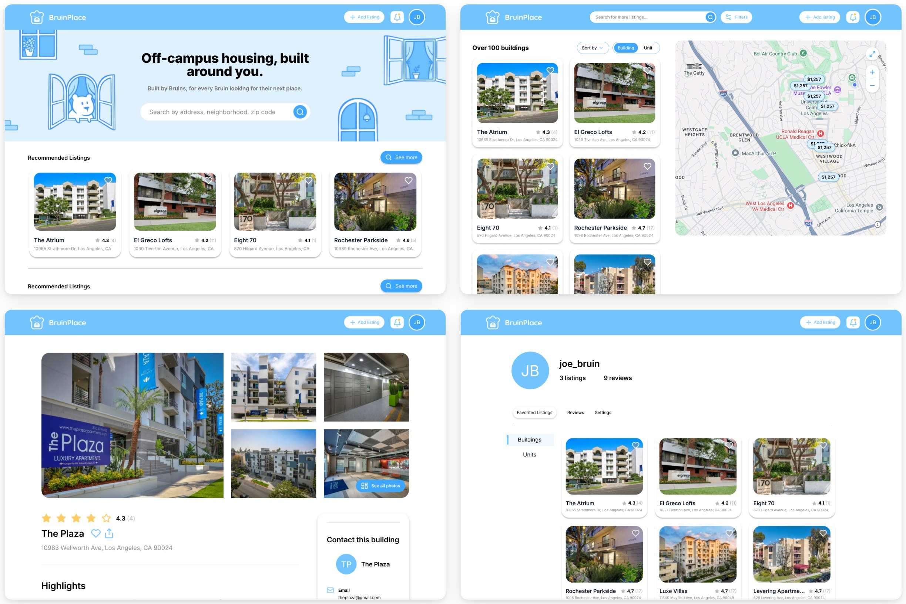
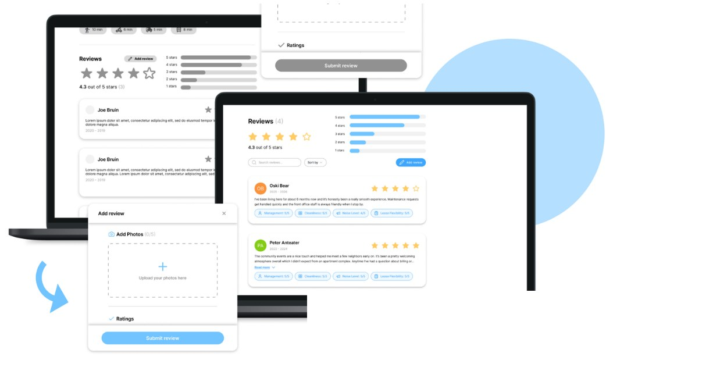
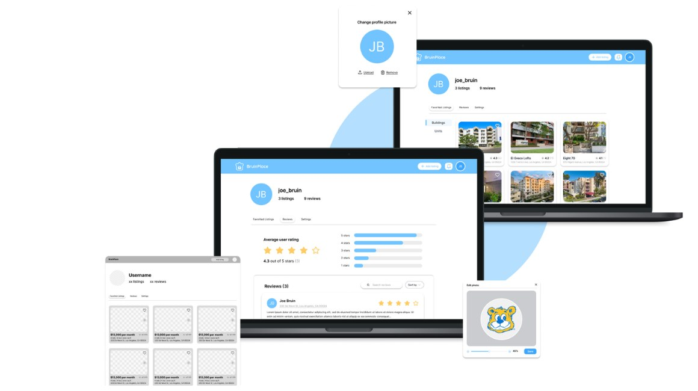
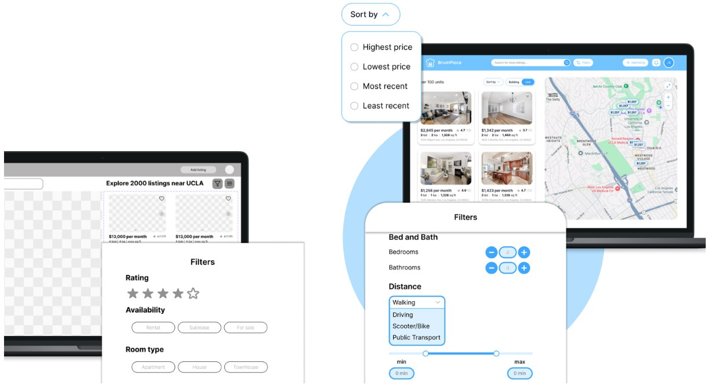
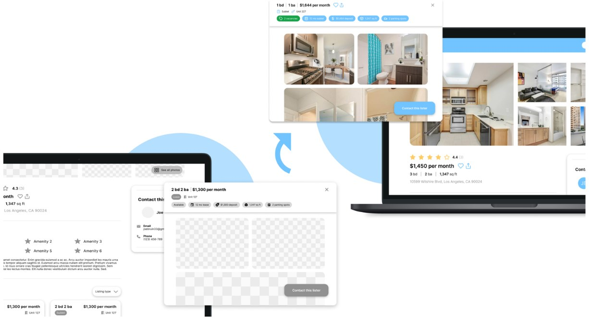
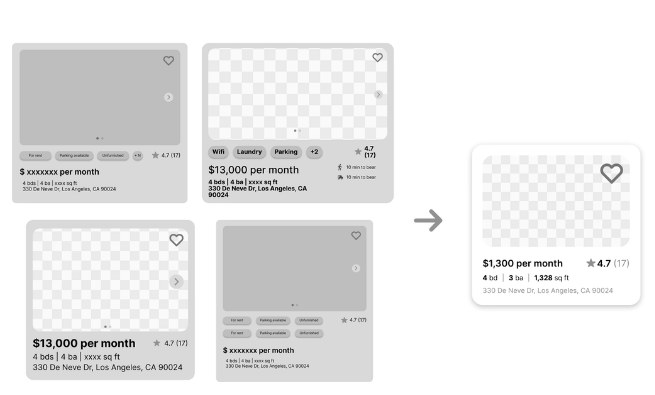
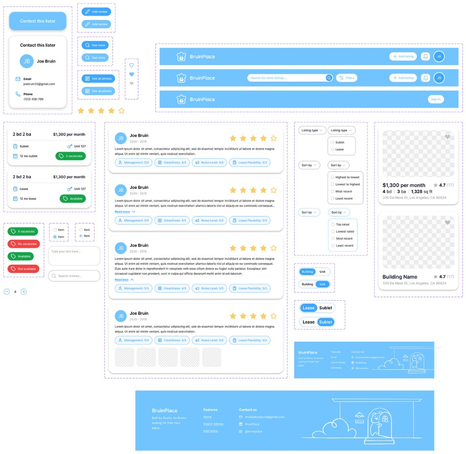

BruinPlace — Campus Housing Platform
BruinPlace is a digital housing platform built to help UCLA students find off-campus housing. I explored user flows and designed UI/UX aimed at increasing transparency and reducing friction in a high-stakes search process.
Context
After 30+ user interviews and 100+ survey responses, UCLA students had three main issues with the off-campus housing search:
- 1
Listing information doesn’t account for student needs
- 2
Need to navigate dozens of platforms to see all options
- 3
Lack of trustworthiness for listings and posters
This is how students find housing today.
Final design
A local housing marketplace that is centralized, personalized, and trustworthy.


- Review categories like management and cleanliness
- Add photos and corresponding date

Users can access their favorited listings, including both favorited buildings and units
Reviews left by the user are also displayed here, to help inform others’ searches
Key design moments
01 Split screen instead of a map toggle
We benchmarked the platforms students already used. Each was strong at one thing, and none was built around a student’s search.
| Company | Best for | Core strengths | Main drawback | UX takeaway |
|---|---|---|---|---|
| Zillow | Broad home search and market research | Large inventory; powerful filters; maps and neighborhood data | Broad audience can make the experience feel busy | Best benchmark for search depth and market information |
| Apartments.com | Rental discovery and comparison | Rental filters; amenities; commute insights; 3D tours | Reviews and listing details can be inconsistent | Best benchmark for detailed rental evaluation |
| realtor.com | Home buying with agent support | Buyer-focused tools; new listings; mortgage and agent features | Dense information and slower map experience | Best benchmark for guided home buying |
| Redfin | Buying or selling with brokerage support | Fast listing updates; pricing history; agent integration | Less focused on rentals and student housing | Best benchmark for transaction flow and transparency |
What we chose. A split screen that keeps listings and the map side by side, so students compare places and see where they are at the same time, without switching views.
What testing changed. Students couldn’t find split-screen, so it moved into the header.

- Split screen navigation
- Filtering options
02 Sorting in students’ words
What testing changed. “Highest to lowest” read as price, not rating, so it was renamed “Top rated.”
03 Buildings and units as separate listings
We split listings into two types, buildings and units, mapped how each one gets posted, and gave both a sticky contact card so reaching a lister is one click away.
What testing changed. Buildings and units still blurred together, so a toggle now separates them.

- Separate listing types for buildings and units
- Sticky contact card in order to easily reach out to listers
04 A design system on top of shadcn/ui
I explored multiple layouts for listing cards and detail pages, each one reducing clutter and improving hierarchy and scanability.

What we chose. Our developers asked us to build on the shadcn/ui kit. We customized its components to fit our branding and stay consistent across screens, and I fleshed out the button elements of the design system.

Impact
- User interviews
- 30+
- Survey responses
- 100+
- Fixes from usability testing
- 3
Research shaped the structure of the product, and usability testing changed it three times before handoff: split-screen moved into the header, sorting was relabelled “Top rated,” and a toggle now separates buildings from units.